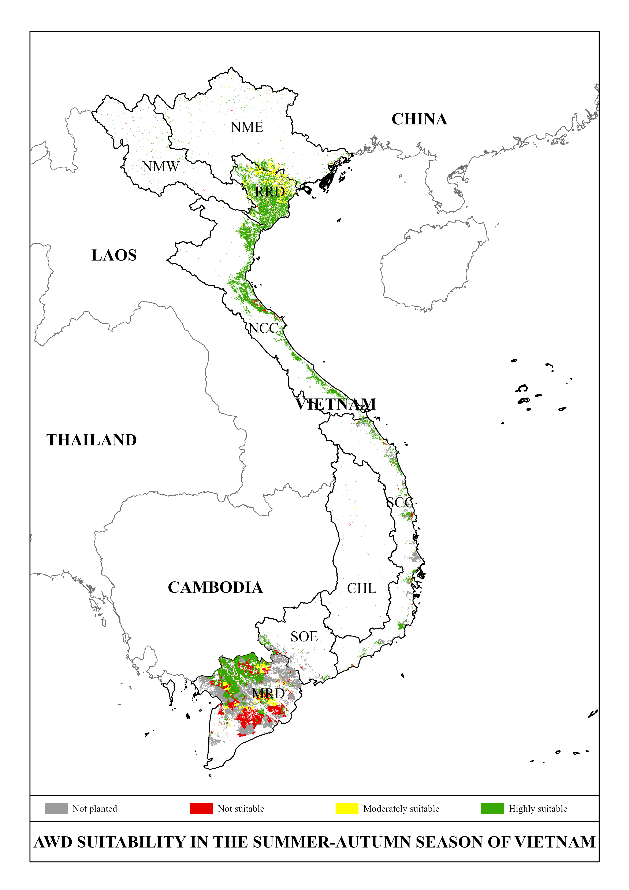
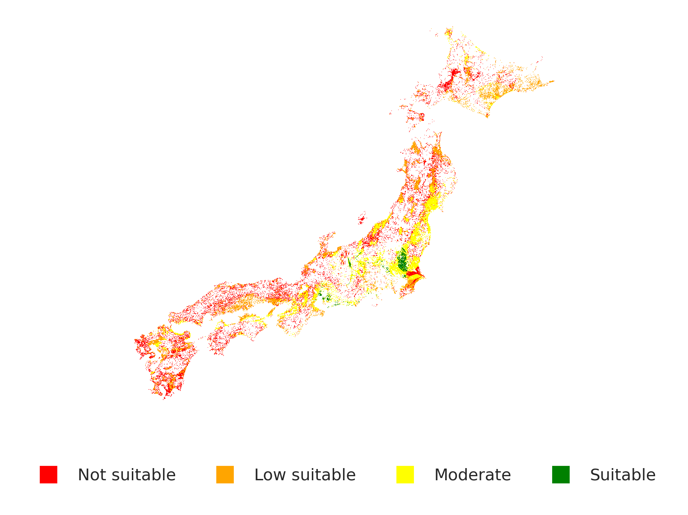

Research Question
Vietnam's Alternative Wet Drying (AWD) is an effective water-saving irrigation practice. Can this policy be transported to Japan? What biophysical and institutional constraints determine feasibility?
Core Problem
AWD is a water-saving practice that allows rice paddies to periodically dry between growing stages, reducing irrigation water demand while maintaining yields. It works well in Vietnam due to humid monsoons and established farmer networks. However, traditional water balance models does not account for biophysical constraints. When we add biophysical constraints (slope, soil drainage, pH), suitable area drops from 62% to 18%.
classified as suitable
Address Critical Gap in Water Balance Model
AWD suitability depends on whether water deficits occur frequently enough to allow safe drying cycles without crop stress. The water balance equation is:
The overestimation problem: The Nelson–Sander model counts dekads (10-day periods) with precipitation deficit, treating all deficits equally. A −5 mm deficit counts the same as a −150 mm deficit, which is not realistic since major precipitation deficits push fields past critical soil-moisture thresholds, flipping them from AWD-suitable into extreme AWD conditions where crop stress and yield loss occur. This leads to inflated suitability estimates that misguide policy decisions.
Rather than counting dekads with any level of precipitation deficit, we implement a threshold-based approach. Areas are suitable only when water deficits does not exceed the safe threshold (−50 mm) that doesn't trigger stress-free drying cycles.
Drag to set maximum allowable water deficit. Stricter thresholds classify fewer areas as suitable but reduce crop failure risk.

💡 Choose -50mm as threshold for final composite map: This threshold best aligns with the biophysical suitability layer, providing an optimal balance between capturing suitable areas and minimizing yield risk.
Spatial Transportability: Why Vietnam Success ≠ Japan Success
The final AWD suitability map integrates both water balance and biophysical factors. Only areas that are BOTH water-deficit AND biophysically favorable are classified as suitable.


Suitability Reduction: Japan's biophysical constraints (terrain, soil properties, latitude-driven climate) limit suitable area to 18% compared to Vietnam's 45%. Additionally, suitable paddies are far more dispersed, making coordinated extension and farmer networks harder to implement—a critical institutional feasibility issue.
Spatial Distribution of Constraints
Biophysical suitability is not uniform. Kanto and Tohoku plains (flat, clay-rich soils, moderate moisture) are highly suitable. Southwestern regions (high percolation, poor drainage) and elevated areas (rapid drying, moisture stress) are poorly suited.
Implication: Unlike Vietnam's uniform delta, Japan's rice system spans distinct agroecological zones. Extension strategy cannot be one-size-fits-all. High-suitability zones (Kanto, parts of Tohoku) are good targets; scattered suitable paddies in unfavorable regions should be deprioritized.
Institutional Barriers: Conditional on Spatial Feasibility
Policy transportability fails not because of biophysical impossibility, but because institutional capacity is mismatched to geography. The barriers differ by region:
In Clustered High-Suitability Zones (Kanto, N. Tohoku)
- Extension Service Gap: Japan's prefectural extension system has expertise in soil management but no AWD training. Vietnam's IRRI-led programs trained 10,000+ farmers over 15 years. Cost to address: 2–3 year training program, pilot farms
- Farm Structure Advantage: Kanto region has larger, mechanized operations (avg. 5–10 ha) vs. Filipino/Vietnamese smallholders (0.5–1 ha). Benefit: Technology adoption faster in larger farms
- Water Coordination: Established irrigation districts with canal networks. Leverage point: Existing governance can manage shared water reduction
In Fragmented Low-Suitability Zones (Southwest, Hills)
- Information Asymmetry (High): Farmers skeptical of unproven water-saving claims when local neighbors do not adopt. Lack of "proof sites" in low-suitability regions. Cost to address: High—requires managed pilot failures
- Risk Concentration: Isolated suitable paddies surrounded by unsuitable land. Water coordination across mixed systems is complex. Implication: Early adopters face yield risk without peer support
- Subsidy Misalignment: Japanese agricultural subsidies favor rice production volume, not resource efficiency. No incentive to reduce water use. Implication: Policy requires new subsidy design, NOT extension alone
Critical insight: Institutional barriers are not uniform. High-suitability zones are institutionally feasible with training + pilot programs. Low-suitability zones require structural policy change (subsidies, risk insurance) that extension alone cannot solve. Forcing AWD in fragmented, unsuitable regions wastes resources and erodes farmer trust.
Evidence-Based Deployment Strategy
Transportability assessment: AWD is technically feasible in 18% of Japan's paddies, concentrated in Kanto and Tohoku. However, success requires strategic sequencing and institutional alignment.
✓ Phase 1: High-Priority Zones (3–5 years)
Target: Kanto Plain + northern Tohoku (≈6% of national rice area)
- Establish IRRI-style training centers in 2–3 prefectures
- Create 50–100 demonstration farms (4–5 ha each)
- Develop prefectural extension curriculum for irrigation management
- Negotiate with irrigation districts for water accounting systems
- Expected GHG mitigation: 15–20% CH₄ reduction from target paddies
✗ Phase 2: Fragmented Zones (deprioritize)
Regions: Southwest (Kyushu, Shikoku), scattered upland areas (≈12% of national rice area)
- AWD physically infeasible due to high rainfall or poor drainage
- Spatial fragmentation makes extension cost-prohibitive
- Alternative strategy: Invest in alternative mitigation (midseason drainage, organic amendments, alternative crops)
- Why not force it: Yield losses + farmer defection + damaged credibility for Phase 1
Expected Outcomes
| Metric | Phase 1 Impact |
| Area under AWD | 180,000–220,000 ha |
| CH₄ emissions avoided | 0.8–1.2 Mt CO₂eq/year |
| Water savings | 25–35% in target regions |
| Extension cost per hectare | $150–200 (3–5 year amortized) |
Policy Transportability Assessment: Summary
- Biophysical Feasibility: AWD is technically viable in 18% of Japan (vs. 45% in Vietnam's Mekong delta), concentrated in Kanto and Tohoku plains.
- Spatial Transportability Failure: Vietnam's success leveraged contiguous geography + unified extension. Japan's fragmented paddies (3.8× more dispersed) require region-specific institutional design.
- Institutional Pathways: High-suitability zones are feasible with training + pilots. Low-suitability zones require policy restructuring (subsidies, insurance), not extension.
- Overestimation Risk: Ignoring biophysical constraints leads to deployment in unsuitable regions → farmer defection + wasted subsidies.
- Realistic Mitigation Potential: Phase 1 targeting can achieve 0.8–1.2 Mt CO₂eq/year, meaningful but not transformative. Multi-pathway approach needed for climate targets.
Research Contributions
🔬 Methods
Demonstrates how threshold-based water balance models improve suitability assessment, correcting 3.4× overestimation of traditional approaches.
🌍 Transportability
Operationalizes policy transportability concept using composite suitability mapping integrating biophysical and institutional factors.
⚖️ Policy Relevance
Informs Japanese Ministry of Agriculture on realistic AWD implementation scope and geographic prioritization for climate adaptation.
📊 Geospatial
Integrates satellite data (slope, soil), climate data (CHIRPS precipitation), and soil properties into unified suitability framework.